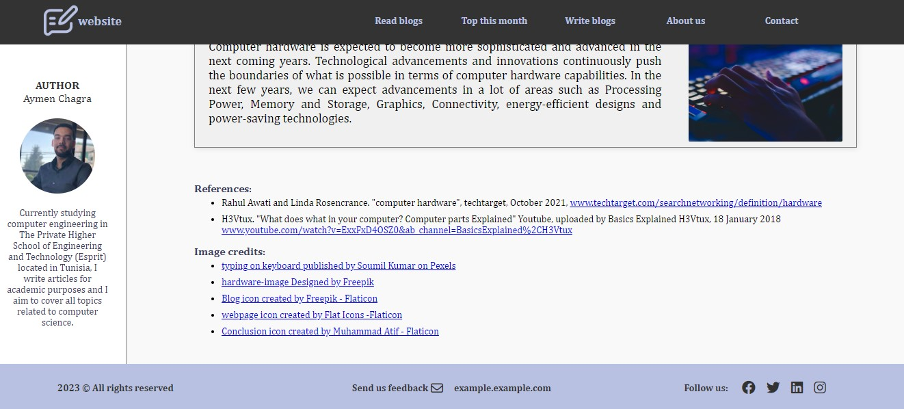
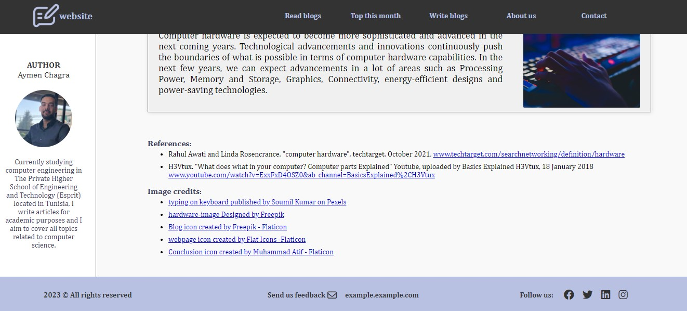

Experiences et projets
projets académiques
Projet de prorammation en c : Ce projet a pour objectif de mettre en place une application qui permet d’administrer les établissements de transfusion sanguine afin de gérer les opérations de transfert de sang et centraliser les informations de dons et de donneurs. Dans ce projet ma tache est de developper l'interface de gestion des RDV des dons.
ce projet est réalisé à l'aide des outil suivants:


Projet embarqué (architecture des microcontrolleurs) : ce projet consiste à concevoir et développer un système de surveillance et de contrôle pour une salle de travail commune ou un bureau partagé. Ce système peut surveiller la température, la luminosité, la présence de personnes, et permettre aux utilisateurs de déclencher des alertes en cas de besoin.
ce projet est réalisé à l'aide des outil suivants:

projets indépendants (d'autoformation hors cadre académique)
Product management system: ce projet est realisé à l'aide du html css et javascript, en but d'apprener les CRUD oparations. lien du projet
Quizz app : Ce projet est réalisé en but d'apprener l'utilisation du "Local storage". dans cette application l'utilisateur peut chercher le sujet qui lui convient, puis passer le quiz question par question. Enfin, il reçoit sa note finale et peut retourner au menu principal. lien du projet

Conception d'un site de blog: Ce projet est realisé en but de decouvirir et apprener le css et d'avoir une idée sur la conception et le design des pages web, sur les choix des couleurs des dimensions, d'utilser les librairies d'icone comme "Fontawsome", et d'apprener le "responsive design". lien du projet
 
